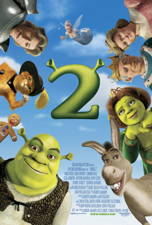

Plot
Shrek 2 takes place following the events of the first film, with Shrek and Donkey meeting Fiona's parents as her zealous Fairy Godmother, who wants Fiona to marry her son Prince Charming, plots to destroy Shrek and Fiona's marriage. Shrek and Donkey team up with a swashbuckling cat named Puss in Boots to foil her plans. Shrek 2 takes place following the events of the first film, with Shrek and Donkey meeting Fiona's parents as her zealous Fairy Godmother, who wants Fiona to marry her son Prince Charming, plots to destroy Shrek and Fiona's marriage. Shrek and Donkey team up with a swashbuckling cat named Puss in Boots to foil her plans. Met with highly favorable reviews like its predecessor, the film grossed $935.3 million worldwide. It scored the second-largest three-day opening weekend in United States history and the largest opening for an animated film at the time of its release. Shrek 2 is also DreamWorks Animation's highest-grossing film to date and the highest-grossing film released by DreamWorks Picture 
Why people love Shrek 2?
Shrek 2 expands the world that viewers first saw in Shrek. There is so much more lore to the Shrek universe, like how Fiona got cursed and where she is a princess from, where do all the other fairytale creatures come from, and just so much more. Shrek 2 does an amazing job at expanding this world by introducing audiences to Far, Far Away land that acts as a modern city with a fairytale-like landscape. Picture castles and horse carriages down Hollywood Boulevard. The climactic scene in this film is what makes this movie not only the greatest Shrek movie but also one of the greatest movies of all time. As Shrek and company storm and race through the castle as a party is going on.They lose friends to each battle, Mongo to the hot milk as he gets his friends in, and Puss in Boots staying behind to take on a room full of guards, all in order to get to Fiona before midnight. Fairy Godmother (voiced by Jennifer Saunders) sings "Holding Out for A Hero," as it's mixed with the Shrek theme music, in the most hyped and epic scenes, an iconic song that was made legendary by the movie.